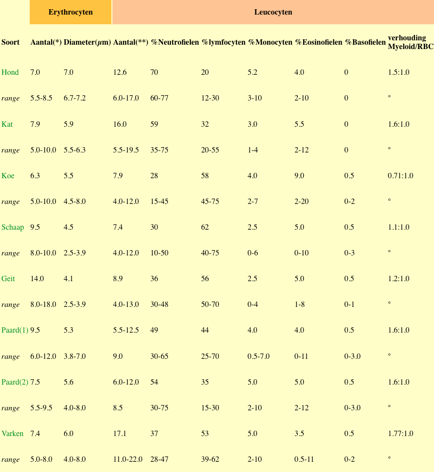

Bloed en bloedvorming
Bloed kan beschouwd worden als een bindweefsel want het beschikt over de drie typische bindweefselbestanddelen: vezels, een amorfe matrix en cellen.
Het fibreuze element in bloed is in normale omstandigheden latent aanwezig en komt slechts tot uiting als reactie op wonden. De amorfe matrix wordt hier vertegenwoordigd door het bloedplasma, dat voor ongeveer 90% water en 10% opgeloste stoffen (hormonen, vitaminen, pigmenten zoals caroteen en bilirubine, Na- en K-ionen, koolhydraten, lipiden, aminozuren, ureum, creatine, urinezuur, albumine, fibrinogeen) bevat. In dit hoofdstuk zullen we ons echter toespitsen op de cellulaire component, nl. de gevormde elementen van het normaal circulerend bloed. Met de term “hematocriet” wordt de procentuele verhouding tussen het aantal bloedcellen en het plasma bedoeld. Onder “bloedserum” verstaan we het bloedplasma minus het fibrinogeen en bepaalde stollingsfactoren.
De cellen in het bloed treffen we in veel gevallen ook in de losmazige bindweefsels aan, hetgeen een reden te meer is om bloed tot de klasse der bindweefsels te rekenen.
De meeste mensen vormen zich een idee van hoe de gevormde elementen van bloed er “behoren” uit te zien op basis van uitstrijkpreparaten, meer bepaald uitstrijkpreparaten gekleurd volgens de methode van Wright, of volgens een GIEMSA-kleuring. Vermeldenswaardig is dat bloedcellen er lichtjes anders uitzien in weefselcoupes dan in uitstrijkpreparaten. Hou daar rekening mee als je bloedcellen in coupes moet herkennen. In uitstrijkpreparaten zijn bloedelementen platter en iets groter in vergelijking met coupes. Ook zal je subtiele kleurverschillen zien tussen de kleuring van Wright en de H&E-kleuring als je de twee naast mekaar bestudeert.
Wat we over het algemeen aanzien als “bloedcellen” zijn in feite cellen van bindweefsels. De meeste gebruiken de bloedbaan enkel als transportmiddel en vertoeven er slechts enkele uren tot ten hoogste een paar dagen. Nagenoeg alle gevormde elementen worden normaal gezien ook buiten het circulerend bloed gevonden, nl. verspreid tussen de vezels van het ongeordend bindweefsel. Sommige circulerende cellen hebben een immature vorm en kunnen pas (morfologisch) gedefinieerd worden nadat ze zich in het bindweefsel hebben genesteld.
Het fibreuze element in bloed is in normale omstandigheden latent aanwezig en komt slechts tot uiting als reactie op wonden. De amorfe matrix wordt hier vertegenwoordigd door het bloedplasma, dat voor ongeveer 90% water en 10% opgeloste stoffen (hormonen, vitaminen, pigmenten zoals caroteen en bilirubine, Na- en K-ionen, koolhydraten, lipiden, aminozuren, ureum, creatine, urinezuur, albumine, fibrinogeen) bevat. In dit hoofdstuk zullen we ons echter toespitsen op de cellulaire component, nl. de gevormde elementen van het normaal circulerend bloed. Met de term “hematocriet” wordt de procentuele verhouding tussen het aantal bloedcellen en het plasma bedoeld. Onder “bloedserum” verstaan we het bloedplasma minus het fibrinogeen en bepaalde stollingsfactoren.
De cellen in het bloed treffen we in veel gevallen ook in de losmazige bindweefsels aan, hetgeen een reden te meer is om bloed tot de klasse der bindweefsels te rekenen.
Kleuring volgens Wright
De preparaten in dit hoofdstuk zijn gekleurd volgens de methode van Wright, genoemd naar de Amerikaanse patholoog die deze techniek invoerde, James H. Wright, 1871-1928. Het betreft een op alcohol gebaseerde mengsel van resine en methyleenblauw waarbij de kleuringsresultaten gelijkaardig zijn aan (maar niet dezelfde als) de gebruikelijke H&E-kleuring voor weefselcoupes.De meeste mensen vormen zich een idee van hoe de gevormde elementen van bloed er “behoren” uit te zien op basis van uitstrijkpreparaten, meer bepaald uitstrijkpreparaten gekleurd volgens de methode van Wright, of volgens een GIEMSA-kleuring. Vermeldenswaardig is dat bloedcellen er lichtjes anders uitzien in weefselcoupes dan in uitstrijkpreparaten. Hou daar rekening mee als je bloedcellen in coupes moet herkennen. In uitstrijkpreparaten zijn bloedelementen platter en iets groter in vergelijking met coupes. Ook zal je subtiele kleurverschillen zien tussen de kleuring van Wright en de H&E-kleuring als je de twee naast mekaar bestudeert.
Gemeenschappelijke kenmerken van gevormde elementen en bindweefselcellen
Wat we over het algemeen aanzien als “bloedcellen” zijn in feite cellen van bindweefsels. De meeste gebruiken de bloedbaan enkel als transportmiddel en vertoeven er slechts enkele uren tot ten hoogste een paar dagen. Nagenoeg alle gevormde elementen worden normaal gezien ook buiten het circulerend bloed gevonden, nl. verspreid tussen de vezels van het ongeordend bindweefsel. Sommige circulerende cellen hebben een immature vorm en kunnen pas (morfologisch) gedefinieerd worden nadat ze zich in het bindweefsel hebben genesteld. 
* x1000000/kubieke mm bloed
** x duizend/kubieke mm bloed
(1) warmbloedigen
(2) koudbloedigen
Laten we beginnen met een uitstrijkpreparaat van normaal bloed van een hond of kat.
Erythrocyten
Het meest voorkomende gevormde element is de erythrocyt of de “rode bloedcel” (RBC). Bij mammalia is de RBC het matuur ontwikkelingsstadium van een cellijn waarin de nucleus (wel aanwezig in voorlopercellen) verloren is gegaan.Qua vorm zijn RBC biconcave schijfjes en bezitten geen interne organellen. Zelfs onder de elektronenmicroscoop zijn ze uniform en amorf. De levensduur van deze cellen is dan ook beperkt (ongeveer 120 dagen). Bij sommige diersoorten komen in 1% van de RBC nog restanten van de kern voor, zogenaamde Howell-Jolly lichaampjes. De rode kleur van het bloed is te wijten aan het hemoglobine in de RBC, dat de belangrijke eigenschap heeft zuurstof te kunnen binden.
Voorbeeld van erythrocyten bij zoogdieren.
De morfologie van RBCen is nagenoeg uniform bij de meeste zoogdieren. De meeste vormvarianten zijn het gevolg van artefacten en/of het resultaat van een ziekte. Een opvallende uitzondering treffen we aan bij de kameelachtigen (kamelen, dromedarissen en lama's) waarbij de RBCen een ovale vorm hebben in plaats van de ronde vorm bij alle andere zoogdieren.
RBCen zijn handig voor een ding (behalve zuurstoftransport uiteraard). In de meeste zoogdieren meten ze ongeveer 5,5 tot 7,5 micrometer in diameter.Het kleinst zijn ze bij het schaap (4 μm) en het grootst bij de hond (7-8 μm). Poikilocytosis is het voorkomen van RBC met een abnormale vorm. RBC zijn sterk vervormbaar (dit komt vooral tot uiting tijdens het diapedese-proces en thv. de capillairen. Ongeveer 45% van het totale bloedvolume wordt ingenomen door RBC. Bij de mens komt dit neer om ongeveer 4.5-5 x 106 /mm3. In hypertonisch midden wordt water onttrokken aan de RBC, waardoor deze schrompelen. In hypotonisch midden zullen RBC gaan zwellen en eventueel (bij<0.4% NaCl) barsten (= hemolyse). Hemolyse kan ook veroorzaakt worden door bacteriën en slangengif die zogenaamde hemolytische substanties bevatten. Een toestand van anemie kan veroorzaakt worden wanneer
- bloedvolume lager is dan normaal of
- het hematocriet te laag is of
- het hemoglobinegehalte te laag is en/of de RBC kleiner zijn dan normaal
(microplaan: te kleine doormeter; microcytair: te klein volume).
Bloedbezinking: wanneer men onstolbaar gemaakt bloed (bv. door toevoeging van heparine) in een gekalibreerd buisje plaatst, vertonen de RBC de neiging tot agglutinatie (samenklontering). Door de zwaartekracht zinken deze klonters naar de bodem van de buis. De bezinkingssnelheid is afhankelijk van de vorm en de grootte van de RBC, hun elektrische lading, de viscositeit van het plasma, de temperatuur, .... De normale bezinkingssnelheid is sterk afhankelijk van de diersoort (zeer traag bij Ru; sneller bij Ca - 1.23 mm na één uur; snelst bij Eq - 1.35 mm na één uur; mens: 3-7 mm na één uur). Bij zwangerschap en onder pathologische omstandigheden kan de bezinkingssnelheid aanzienlijk toenemen. Deze parameter heeft aldus een enorm diagnostisch belang!
Leukocyten
De “witte bloedcellen” of leukocyten maken slechts 1% van het totale bloedvolume (bij mens 5000-9000/mm3) en worden onderverdeeld in twee grote categorieën. Granulocyten hebben insluitsels in hun cytoplasma; dit is niet het geval bij agranulocyten. In tegenstelling tot agranulocyten hebben granulocyten gelobde of gesegmenteerde nuclei. Onder de granulocyten onderscheiden we de neutrofielen, eosinofielen, en basofielen. De lymfocyten and monocyten behoren daarentegen tot de agranulocyten.Granulocyten
Neutrofielen zijn de meest verspreide leukocyten bij mensen, honden, katten en paarden en omvatten aldus 60-70% van alle witte bloedcellen. In de klinische literatuur hebben ze vaak andere benamingen. “Poly's” of “PMN”-cellen zijn de meest gangbare afkortingen voor “polymorfonucleaire leukocyt”. Deze cellen kunnen op een uitstrijkpreparaat geïdentificeerd worden op basis van hun omvang (ca. 9 tot 12 µm) en hun typische gesegmenteerde of gelobde nucleus. De nucleus kan in zijn volgroeide vorm 2 tot 5 lobben hebben die met elkaar zijn verbonden door zeer dunne kerngedeelten (chromatinebruggen). De granulen in het cytoplasma zijn gewoonlijk lichtjes gekleurd gaande van roze tot paars. Door deze kleurvariatie worden deze cellen ook “heterofiel” genoemd. De granulen in de heterofiel zijn gespecialiseerde lysosomen die zure hydrolasen bevatten. Deze cellen bezitten dus fagocytaire eigenschappen, in het bijzonder voor bacteriën. We treffen deze cellen doorgaans aan op plaatsen waar bacteriën kunnen binnendringen. Door chemotactische prikkels worden deze cellen naar ontstekingshaarden aangetrokken. Door diapedese verlaten ze vrij snel de bloedbaan (6-10 uren) en verblijven nog een tweetal dagen in het binnengedrongen weefsel. De aanwezige neutrofielen zullen de binnenkomende bacteriën aanvallen en vernietigen, waarna ze zelf afsterven. De dode cellen en hun afbraakproducten vormen het grootste gedeelte van de pus bij etterende wonden.Voorbeeld van neutrofielen.
Eosinofielen (2-5% van alle witte bloedcellen) zijn veel minder talrijk dan neutrofielen. Ze vertonen dezelfde omvang of zijn iets groter (10 tot 14 µm) en de helder oranje tot paars gekleurde granulen in het cytoplasma zijn uitgesproken eosinofiel. Typisch voor eosinofielen is de tweelobbige kern i.t.t. de multilobbige kern bij neutrofielen.
Eosinofielen zien er lichtjes anders uit naargelang van de soort. Bij paarden zijn de granulen bv. zeer groot. Interessant is even de “typische” eosinofielen van honden en katten te vergelijken met die van paarden. Over de functie van deze cellen bestaat nog onzekerheid maar het is reeds bewezen dat eosinofielen betrokken zijn bij allergische reacties. Het betreft waarschijnlijk fagocyten die specifiek van belang zijn bij het fagocyteren en opruimen van antigen-antilichaam-complexen.
Voorbeeld van een eosinofiel.
Basofielen zijn veruit de zeldzaamste granulocyten (0.2-1% van alle witte bloedcellen) en komen vrijwel niet voor bij katten, ratten en muizen. Ze hebben ongeveer dezelfde diameter als neutrofielen en hun nucleus is gewoonlijk tweelobbig. De ruwe granulen in het cytoplasma zijn sterk basofiel en donkerpaars gekleurd, vaak zo intens dat de kern gemaskeerd wordt. Vaak is de inhoud van de granulen reeds uitgestort of zijn ze in het preparaat afgespoeld. Hun functie is nog niet opgehelderd maar het zou kunnen gaan om een circulerende mestcel. Bij sommige diersoorten bevatten de granulen histamine en heparine, stoffen die bij bepaalde weefsels ook voorkomen in mestcellen en de stoffen die histamine vrijgeven uit de mestcel zijn eveneens basofiel.
Voorbeeld van een moeilijk zichtbare basofiel.
Agranulocyten
De lymfocyt (20-30% van alle witte bloedcellen) is de talrijkste en belangrijkste soort van de agranulocyten. In het perifeer bloed komen twee verschillende soorten voor: kleine lymfocyten (5 tot 10 µm) en middelgrote lymfocyten (10 tot 18 µm). De grote lymfocyten worden gewoonlijk buiten de bloedbaan gevonden, meestal in lymfoïde organen.Structureel kunnen lymfocyten in uitstrijkpreparaten worden herkend aan hun zeer hoge nucleus/cytoplasmaverhouding. De zeer intens gekleurde nucleus is meestal rond (soms met een zeer kleine indeuking). Het donkerblauw gekleurde cytoplasma is te zien als een smalle zoom aan de ene kant van de kern.
Er bestaan twee functionele lymfocyttypes: één betrokken bij de cellulaire immuunreactie (T-lymfocyten) en de ander bij humorale immuunreactie (B-lymfocyten). Morfologisch is er echter geen onderscheid tussen beide. Wel kan er middels specifieke antilichamen (ondermeer verschillende CD-receptoren) een onderscheid gemaakt worden. (cfr. infra)
Voorbeeld van een lymfocyt.
Monocyten, de tweede soort agranulocyten, (4-5% van alle witte bloedcellen) zijn de grootste gevormde elementen in de bloedstroom. Een gezonde monocyt heeft een doorsnede van 16 tot 25 micrometer. De nucleus varieert in vorm en kan nier-, boon- of (normaal gezien) hoefijzervormig zijn met een diepe indeuking.
Voorbeeld van een monocyt.
De inhoud van de nucleus kleurt hier niet zo intens als bij lymfocyten; de chromatinestrengen zijn zichtbaar (iemand beschreef het patroon van de kern ooit als “spaghetti en gehaktbal”). De nucleus/cytoplasmaverhouding ligt lager dan bij de lymfocyt. Het cytoplasma van de monocyt vertoont een grijsblauwe tint door de fijne azurofiele granulen. Van zodra de monocyt in het omgevende weefsel komt, transformeert hij zich tot macrofaag.
Thrombocyten of Bloedplaatjes
Bloedplaatjes staan in voor het stollingsproces. Het zijn in feite fragmenten van de zeer grote voorlopercel in het beenmerg, nl. de megakaryocyt en door afknopping daarvan losgekomen. Vanaf dit moment worden de door een membraan omgeven cytoplasmische fragmenten bloedplaatjes genoemd. Bij mammalia bezitten thrombocyten GEEN kern.Bloedplaatjes hebben slechts een diameter van 2 tot 4 micrometer (ongeveer de helft van een RBC), en hebben een ronde tot ovale vorm. Het centrale gedeelte is zwak basofiel en de periferie bleek en homogeen. Je treft ze aan tussen de erythrocyten. Onder normale omstandigheden treffen we bij de mens 200.000-350.000 bloedplaatjes/mm3 aan. Bloedplaatjes blijven ongeveer 8 tot 10 dagen in de bloedcirculatie. Lichtmicroscopisch kan men een helder hyalomeer rond het centrale donkere granulomeer herkennen.
Bloed in niet-zoogdieren
Het bloed van niet-zoogdieren ziet er enigszins anders uit. Het belangrijkste verschilpunt bestaat erin dat bij alle niet-zoogdieren de erythrocyten gekernd zijn. Bij zoogdieren duidt de aanwezigheid van een kern in een erytrocyt op een pathologisch verschijnsel; bij niet-zoogdieren is dit dus niet het geval.Haematopoiesis of bloedvorming
Algemeen:Tijdens de embryonale ontwikkeling kunnen we drie periodes onderscheiden wat de bloedvorming betreft:
- de megaloblastische periode: in het extra-embryonaal mesoderm van de dooierzak worden bij de mens tijdens de eerste drie maanden van de embryonale ontwikkeling hematopoietische stamcellen gevormd (cfr. bloedeilandjes).
- de hepato-lienale periode: vanaf het einde van de tweede foetale maand begint in het mesenchym van de lever en de milt de vorming van rode en witte bloedcellen en dit gaat door tot het einde van de dracht.
- de medullaire periode: vanaf de vijfde foetale maand en ook postnataal wordt in het rode beenmerg (medulla ossium rubra) een pluripotente stamcel gevormd (verouderde term “hemocytoblast”) van waaruit alle bloedcellen zich zullen differentiëren.
Pluripotente stamcel----------evolueert naar myeloïde of naar lymfoïede stamcel
Myeloïede stamcel differentieert verder tot multipotente stamcel
Erythrocytopoiese
De vorming van RBC gaat gepaard met 4 belangrijke fenomenen:- vermindering van het celvolume;
- condensatie en uiteindelijk uitstoten van de kern;
- progressieve vermindering van de basofilie;
- progressieve toename van de acidofilie.
multipotente stamcel
BurstFormingUnit-erythroblast
ColonyFormngUnit-erythroblast
pro-erythroblast: grote cel (doormeter 14-17 µm), veel RER, grote kern met meerdere nucleoli, euchromatische nuclei; transferrine-receptoren op oppervlak (voor captatie van Fe2+ voor hemoglobine-synthese)
basofiele erythroblast: (doormeter 13-16 µm); toename van heterochromatine (densere kern), geen nucleoli, weinig of geen RER-cisternen, sterk basofiel cytoplasma, ophopingen van ferritine
polychromatofiele erythroblast: (doormeter 12-14 µm); nog meer heterochromatine segmenten in kern, minder celorganellen
orthochromatofiele erythroblast: (doormeter 8-10 µm); = laatste kernhoudende stadium; kern excentrisch gelegen en wordt pycnotisch
reticulocyt
erythrocyt
Granulocytopoiese
multipotente stamcelColonyFormingUnit stamcel
myeloblast
ovoide tot ronde vorm; doormeter 10-15 µm
ronde kern (3-5 nucleoli); fijnverdeeld (eu)chromatine
licht basofiel cytoplasma; veel mitochondria & vrije ribosomen; enkele cisternen van RER
granula afwezig
pro-myelocyt
meestal groter dan myeloblast (doormeter tot 20 µm) (is na de megakaryocyt de grootste cel in het beenmerg)
kern doorgaans rond tot niervormig; grover chromatine, opvallende nucleoli, goed ontwikkeld GA & RER
sterker basofiel cytoplasma dan myeloblast (kleurt dus sterker blauw)
azurofiele grana (gevormd aan trans-zijde van GA) die lysosomale enzymen bevatten en peroxidase-positief zijn
myelocyt
wisselende doormeter (10-15 µm)
ovale kern, meestal excentrisch gelegen, grof chromatinepatroon
geen nucleoli (itt monocyten die hun nucleoli ook in mature vorm behouden)
vorming van azurofiele grana stopt vanaf dit stadium
vorming van specifieke grana die aan cis-zijde van GA ontstaan en peroxidase-negatief zijn
neutrofiele - eosinofiele - basofiele metamyelocyt
boonvormige kern met indeuking
kleiner kernvolume en vooral heterochromatine
specifieke grana met duidelijk verschillende kleuringseigenschappen
staafkernige neutrofiele - eosinofiele - basofiele granulocyt
C-, S- of V-vormige nucleus
segmentkernige neutrofiele - eosinofiele - basofiele granulocyt
Monocytopoiese
CFU-Granulocyt/monocytCFU-monocyt
Monoblast
doormeter 20 µm
basofiel cytoplasma
grote lichte (euchromatische) kern met duidelijke nucleolus
Promonocyt
doormeter 15 µm
matig grote, licht onregelmatige gevormde kern
vrij brede zoom licht basofiel cytoplasma; veel azurofiele grana
Monocyt migreert snel vanuit bloed naar weefsel en lichaamsruimten om zich daar te transformeren tot Macrofaag. (monocyten keren meestal nooit terug naar de bloedbaan)
Thrombocytopoiese
ColonyFormingUnit-megakaryocytlicht basofiel cytoplasma
grote ronde of lichtjes ingedeukte (euchromatische) kern met meerdere nucleoli
Megakaryoblast
doormeter 15-50 µm
ei-tot niervormige kern (nog diploïd) en ondergaat endomitose (= kerndeling zonder cytoplasmadeling)
Promegakaryocyt (basofiele megakaryocyt)
polyploïde kern
multilobulaire (>4) kern
Megakaryocyt
doormeter 40-150 µm
2 of meer heterochromatische kernlobben met enkele onduidelijke nucleoli
veel vrije ribosomen + veel grote azurofiele grana
toenemend aantal membraanprofielen in cytoplasma: demarcatiemembranen. Deze ontstaan door fusie van blaasjes en ingroei door plasmalemma. Bij een oudere megakaryocyt wordt het cytoplasma verdeeld in zgn. prospectieve plaatjesvelden.
Thrombocyt